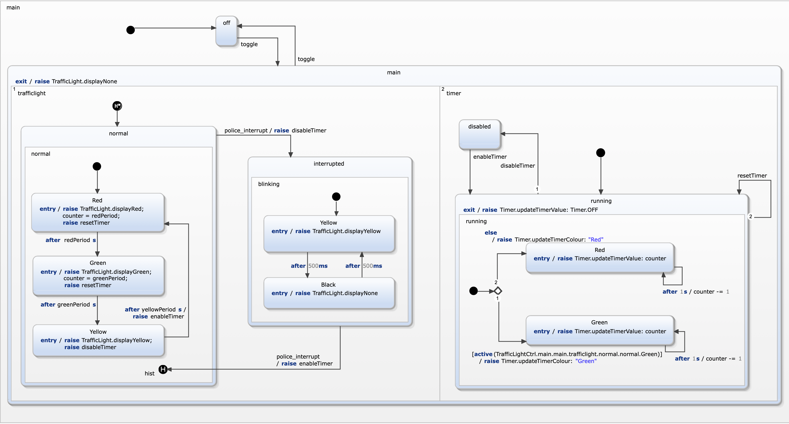

In this exercise an orthogonal region is used to model a timer. The result should be comparable to the follwing statechart...

| requirement | modelling approach |
|---|---|
| R10: a timer displays the remaining time while the light is red or green | The timer is defined in a second region within state on. |
| R10a: This timer decreases and displays its value every second. | An internal variable for the counter is introduced. Wehn switching e traffic light phase the counter value is set to the time period of the phase. Additionally the local evemts resetTimer, enableTimer, and disableTimer are used to synchronize traffic light phase switches with the timer. |
| R10b: The colour of the timer reflects the colour of the traffic light. | When the timer is enabled it checks the active traffic light phase state using active() function. |